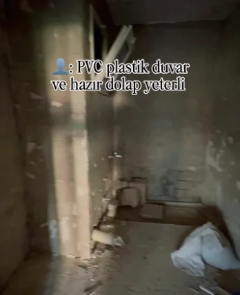
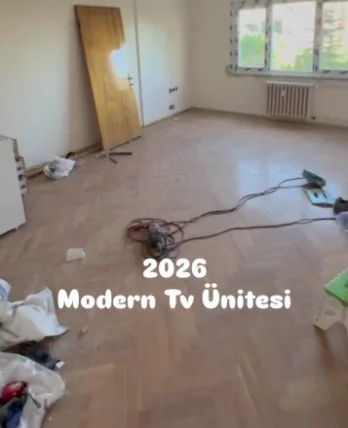

Şeker Mobilya · Bahçelievler
Ölçüye özel mobilya, duvar ve ışık: odanın son hâli tek ekipten.
TV ünitesinden giyinme odasına, banyo dolabından petek kapamaya kadar; dolabı, çıtalı duvarı, gizli ışığı ve lake boyayı aynı ekip yapıyor. Bahçelievler Yenibosna'dayız.


Bir odada neleri birlikte yapıyoruz
Instagram'daki işlerimize bakınca aynı şeyler tekrar ediyor: ölçüye oturan dolap, çıtalı panel, gizli ışık ve ayna. Hepsi birbirini tutsun diye aynı ekipten çıkıyor. Bu yatak odasında görülenler:
- 1Tavana kadar çıtalı duvar paneli
- 2Tavan bandında gizli ışık
- 3Arkası ışıklı yuvarlak ayna
- 4Duvara asılı komodin
Hangi oda için yazıyorsunuz?
- 01TV ünitesiLED'li raflar, mermer görünümlü panel, ceviz kaplama; duvarın tamamı tek tasarım.
- 02Banyo dolabı ve banyo yenilemeLavabo dolabı, makine yerli boy dolap, ışıklı ayna; istenirse banyonun tamamı.
- 03Mutfak dolabıTam açılan çekmeceler, çekme raflı kiler, tavana kadar dolap.

- 04Giyinme odası, gardırop ve genç odasıCam kapaklı ışıklı giyinme odası, gömme dolap, ranza ve genç odası.
- 05Portmanto ve antreGömme alana portmanto, çıtalı antre duvarı, ayna ve konsol.

- 06Çıtalı duvar paneli ve lake petek kapamaTavana kadar çıtalı panel, tavan bandında ışık, lake petek kapama.
İşe başladığımız gün
Videolarımızın çoğu boş odadan başlar: sökülmüş duvar, kapısı çıkarılmış antre, parkesi kalkmış salon. Bunlar o videoların ilk kareleri; bitmiş hâlleri Instagram'da.



Fotoğraftan teslime
Fotoğraf ve kaba ölçü
Odanın birkaç fotoğrafını ve aklınızdaki işi WhatsApp'tan gönderin. Kaba ölçü yeterli; metre yoksa da yazın.
Ölçü
Kesin ölçüyü yerinde alıyoruz; kolon, tesisat, petek ve priz yerleri o gün netleşir.
Renk ve malzeme
Lake rengi, kaplama, kulp, ışığın yeri ve rengi birlikte seçilir.
İmalat
Parçalar ölçünüze göre üretilir.
Montaj ve teslim
Yerinde montaj yapılır, ışıklar bağlanır ve teslim edilir.
Odanın fotoğrafını gönderin
Birkaç seçimle WhatsApp mesajınızı hazırlayın; fotoğrafları WhatsApp'ta ekleyin. Bu sayfa hiçbir bilgiyi kaydetmez ya da bir yere göndermez — mesajı siz gönderirsiniz.
WhatsApp kullanmıyorsanız arayın: 0535 761 85 38
Yenibosna'dayız
Şeker MobilyaYenibosna Merkez, Ahmet Yesevi Cd. No:120, 34192 Bahçelievler/İstanbul
0535 761 85 38
Bugünkü açılış ve kapanış saatini Google Haritalar'da görebilirsiniz. Gelmeden önce aramanızı öneririz.